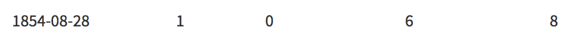
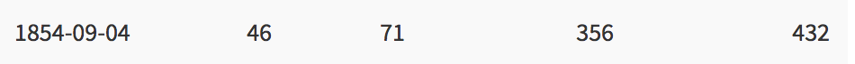

Visualization and Visual Analytics
About
Link: https://lindmae.shinyapps.io/Project1/
How to use: To navigate through the different sets of data, use the sidebar on the left. To close or open the sidebar, click the icon located on the top left part of the page. Once you have chosen a dataset, you can click through some tabs found on the boxes within the main page to change how you view the data (i.e bar chart vs pie chart).
What you can do: Explore data related to the London 1854 cholera outbreaks and deaths. Find data on attacks vs deaths, census data, fatality data, and a map showing locations of deaths and water pumps. Compare and contrast the effects that the 1854 cholera outbreak had on different age groups, genders, or locations.
Data
Data used: Attacks vs deaths due to Cholera, fatality data based by age group, UK census data in 1851, locations of Cholera deaths, locations of water pumps.
Data found: Data put together by Robin Wilson (robin@rtwilson.com, www.rtwilson.com/academic).
Data modifications: Added total deaths and attacks columns to attack vs death data. Modified dates to be more readable by R studio. Added an overall sum to each row for census data.
Libraries used:
1.shiny
2.DT: used to create data tables
3.ggplot2: used to plot all graphs
4.scalesL used for brewer color scales.
5.shinydashboard: used to create a more fluid layout
6.leaflet: used to draw a map of london with markers on top.
7.reshape2: used to melt together data so drawing a ggplot with multiple lines is much easier.
Download
Link: Click here to download from Google drive.
How to run:
1. Download R (2017-11-30 Kite-Eating Tree) from a site such as https://cran.cnr.berkeley.edu/
2. Download R-Studio (1.1.383) from https://www.rstudio.com/products/rstudio/download/
3. Download the project (link above)
4. Unzip the downloaded file and double click the "Project 1.Rproj" file to open the project in R Studio. If this does not work, open R Studio and simply navigate to the unzipped folder and click it.
5. Once the project is open in R Studio, click the "Run App" button found at the top.

Analysis
1. In the week between August 28 and September 4, there was a huge jump in attacks and deaths resulting from Cholera. Specifically on August 28, there were only 6 total attacks and 8 total deaths. By September 4th, there were a total of 356 deaths and 432 attacks!
 2. Looking at census data, there are many more females than males that are aged 20 to 29.
3. Fatalities affected men and women equally and the most common age group affected was mostly the elderly.
4. There was one pump that seemed to serve the majority of of the nieghborhood, close to current day Broadwick Street in London and located centrally to the neighborhood. Near that pump, deaths were incredibly high. Other pumps that are seen more on the outskirts of the attacks must have been used less as there are not as many outbreaks near it (or the water was not infected).